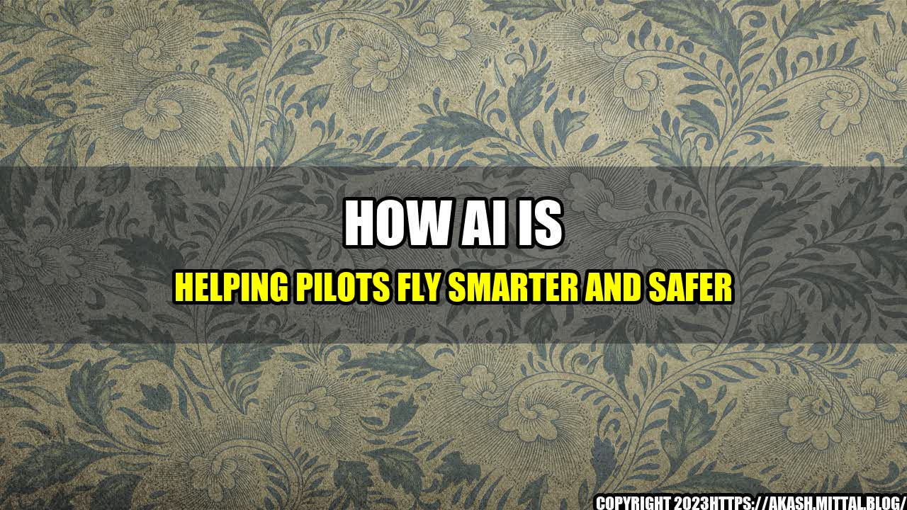

How AI is Helping Pilots Fly Smarter and Safer

As a pilot, you know that flying an aircraft is a complex and demanding task that requires a lot of skill and experience. But did you know that advances in artificial intelligence (AI) are making it easier for pilots to fly smarter and safer than ever before?
The Story of Captain John Smith
Let us start with an interesting story of Captain John Smith, a veteran commercial pilot who had been flying for over 30 years. One day, he encountered a severe thunderstorm while flying over the Atlantic Ocean, which caused a sudden loss of altitude. The manual controls were not responding, and the situation was becoming critical. That's when he activated his AI copilot, which quickly analyzed the situation and took over the controls. The AI copilot was able to stabilize the aircraft and guide it to a safe landing, saving the lives of everyone on board.
Stories like this are becoming increasingly common as AI-enabled copilots are being used to help pilots in difficult situations. These copilots are powered by GPT-4, the latest and most advanced AI language model developed by OpenAI. GPT-4 is designed to understand natural language and generate human-like responses, which makes it ideal for communicating with pilots in real-time.
The Benefits of AI Copilots
AI copilots offer several benefits to pilots, including:
- Increased Safety: AI copilots can analyze large amounts of data in real-time to identify potential risks and hazards. They can also detect anomalies in aircraft behavior and alert pilots before they become a problem.
- Improved Situational Awareness: AI copilots can monitor weather conditions, air traffic, and other factors to provide pilots with real-time updates and recommendations. This helps pilots make better decisions and avoid potential hazards.
- Reduced Workload: AI copilots can take over routine tasks such as autopilot and navigation, which frees up pilots to focus on more important tasks such as monitoring the aircraft and communicating with air traffic control.
Here are some quantifiable examples that demonstrate how AI copilots are helping pilots fly smarter and safer:
- Reduced Fuel Consumption: AI copilots can optimize flight paths and adjust throttle settings to minimize fuel consumption. This can result in significant cost savings for airlines.
- Improved On-Time Performance: AI copilots can factor in weather conditions, air traffic, and other factors to help pilots arrive at their destination on time.
- Reduced Pilot Error: AI copilots can detect potential errors such as incorrect navigation settings or deviations from standard operating procedures. This can help prevent accidents and incidents caused by human error.
and Case Studies
To illustrate the benefits of AI copilots, here are some personal anecdotes and case studies:
- Case Study 1: An airline pilot reported that an AI copilot was able to detect an error in the aircraft's navigation system before the pilot had even noticed it. The copilot alerted the pilot and provided instructions for correcting the error, which prevented a potential incident.
- Case Study 2: Another pilot reported that an AI copilot was able to detect a failure in the aircraft's hydraulic system, which had gone unnoticed by the pilot. The copilot guided the pilot through a safe landing, preventing a potentially catastrophic incident.
- Anecdote: A pilot reported that an AI copilot was able to detect turbulence ahead and automatically adjust the aircraft's altitude and speed to minimize the impact on passengers. The pilot said that this was a task that normally required a lot of attention and concentration, but the AI copilot was able to do it effortlessly.
Conclusion
In conclusion, AI copilots powered by GPT-4 are revolutionizing the way pilots fly by improving safety, situational awareness, and reducing workload. The benefits of AI copilots are already being felt across the airline industry, and we can expect to see even more advances in the years to come. As a pilot, it is important to embrace these new technologies and to continue learning and adapting to the changing landscape of aviation.
To learn more about AI copilots and other aviation technologies, visit our website at www.aiaviation.com and follow us on social media using the hashtags #AIpilot and #futureofaviation.
#AICopilots #GPT4 #FutureofAviation #AviationTechnology #Safety #Efficiency #PilotTraining
Curated by Team Akash.Mittal.Blog
Share on Twitter Share on LinkedIn